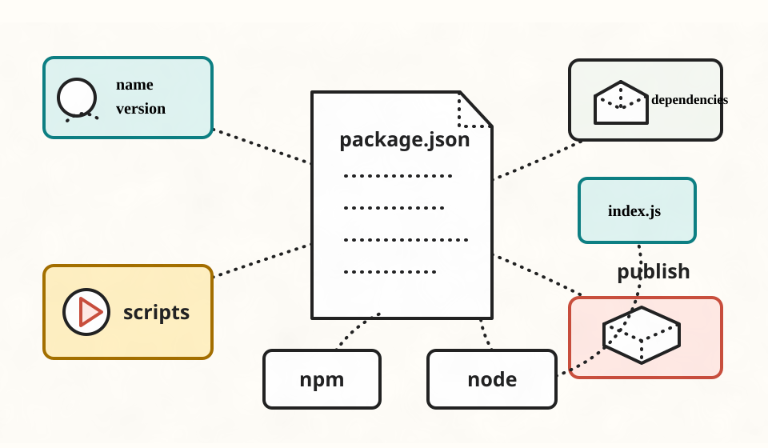

第 2 课：JSON 与 package.json
这一课只做一件事：让你能读懂一个最小 package.json。你不需要先会 JavaScript，只要能看懂“字段名、字段值、对象、脚本、依赖”这几件事。

package.json 像项目的控制文档：npm 读它来安装依赖、执行脚本、准备发布；Node.js 通常只负责运行脚本最终指向的 JavaScript 文件。一、真实场景
你打开一个 Node.js 项目，最常见的入口文件不是 index.js，而是 package.json。因为你通常会先问：
这个项目叫什么？
看 name。
怎么启动？
看 scripts。
依赖哪些包？
看 dependencies 和 devDependencies。
本课胜利条件：看到一个最小 package.json，你能说出每个字段的大概作用，并能改一个脚本让 npm run dev 执行不同文件。
二、JSON 是什么
JSON 是一种用文本表示结构化数据的格式。MDN 对 JSON 的核心描述是：它可以表示对象、数组、数字、字符串、布尔值和 null。package.json 必须是合法 JSON，而不是随便长得像 JavaScript 对象就可以。
先看一个最小 JSON 对象：
{
"name": "hello-package-json",
"private": true,
"keywords": ["node", "npm"]
}| 位置 | 读法 | 例子 |
|---|---|---|
"name" |
字段名，也叫 key | 必须用双引号 |
"hello-package-json" |
字段值，也叫 value | 这是字符串 |
true |
布尔值 | 不是字符串，所以不加引号 |
["node", "npm"] |
数组 | 表示一组有顺序的值 |
零基础先记三条：字段名用双引号；字段之间用英文逗号；最后一个字段后面不要逗号。
三、package.json 是什么
package.json 是 npm 项目的描述文件。npm 官方文档说明：如果你要发布包，name 和 version 是最重要的字段；依赖则通常写在 dependencies 或 devDependencies 里。
入门阶段，把它分成三块就够了：
{
"name": "hello-package-json",
"version": "1.0.0",
"scripts": {
"dev": "node index.js"
},
"dependencies": {
"picocolors": "^1.0.0"
},
"devDependencies": {
"typescript": "^5.0.0"
}
}项目身份
name 和 version 回答“这个项目是谁、当前版本是多少”。如果以后发布 npm package，它们会变得非常关键。
命令菜单
scripts 回答“这个项目有哪些统一命令”。例如 npm run dev 会执行 scripts.dev 右边的命令。
依赖清单
dependencies 放运行时需要的包；devDependencies 放开发、测试、构建时需要的工具。
四、复制粘贴练习
这次仍然不要求你自己写 JavaScript。我们只通过复制粘贴，观察 package.json 如何影响项目运行。
1. 创建目录
mkdir package-json-lab
cd package-json-lab2. 创建 package.json
新建 package.json，复制下面内容：
{
"name": "package-json-lab",
"version": "1.0.0",
"private": true,
"scripts": {
"dev": "node index.js",
"hello": "node hello.js"
}
}3. 创建两个 JavaScript 文件
新建 index.js，复制：
console.log("This is index.js");新建 hello.js，复制：
console.log("This is hello.js");4. 运行两个脚本
npm run dev
npm run hello你应该看到两个不同输出：
This is index.js
This is hello.js观察重点：npm run dev 和 npm run hello 都是 npm 先读取 package.json，再执行对应脚本右侧的 node ... 命令。
五、即时练习
题 1：package.json 必须是什么格式？
题 2：npm run dev 会读取哪个字段？
题 3：应用运行时需要的包通常放哪里？
回忆练习：不用看上文，用 2-4 句话解释为什么 npm run dev 会运行 index.js，而 npm run hello 会运行 hello.js。写完点检查。
六、课后小任务
在练习项目里，只改 package.json，把 dev 脚本从：
"dev": "node index.js"改成：
"dev": "node hello.js"然后重新运行：
npm run dev如果输出变成 This is hello.js，说明你已经理解了本课最重要的关系：npm 读取脚本配置，Node.js 执行脚本指向的文件。
如果卡住，把你的 package.json 发给我，我会帮你看是哪一个 JSON 规则或脚本配置出了问题。
主要来源
本课参考 MDN JSON 文档 对 JSON 值类型和语法边界的说明，以及 npm 官方 package.json 文档 对 name、version、scripts、dependencies、devDependencies 等字段的说明。